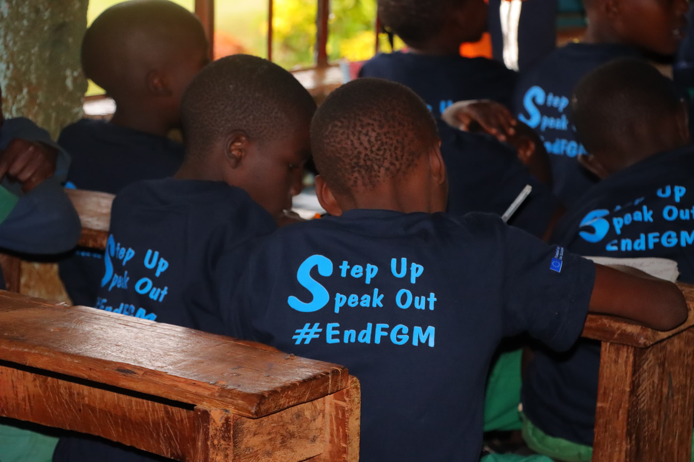
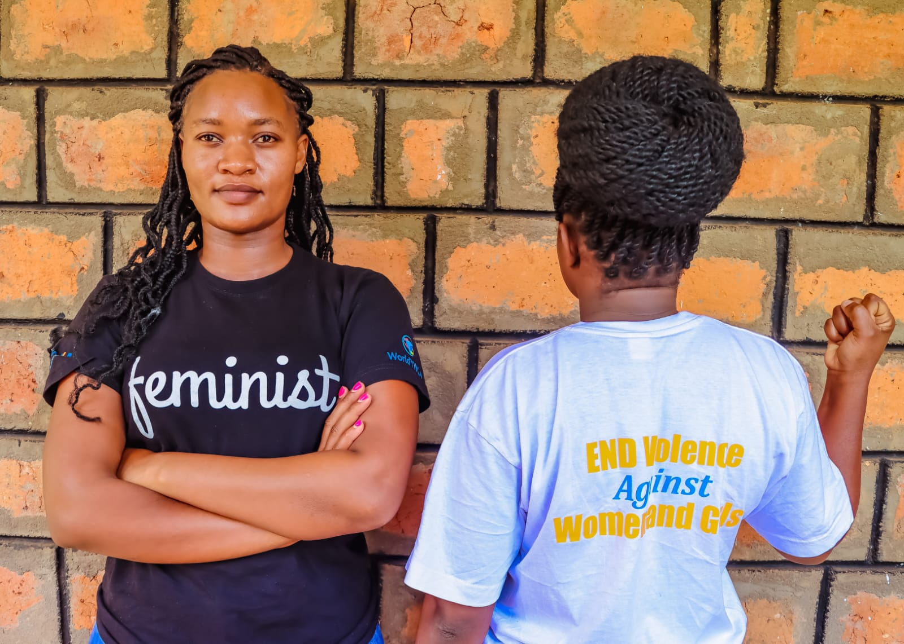
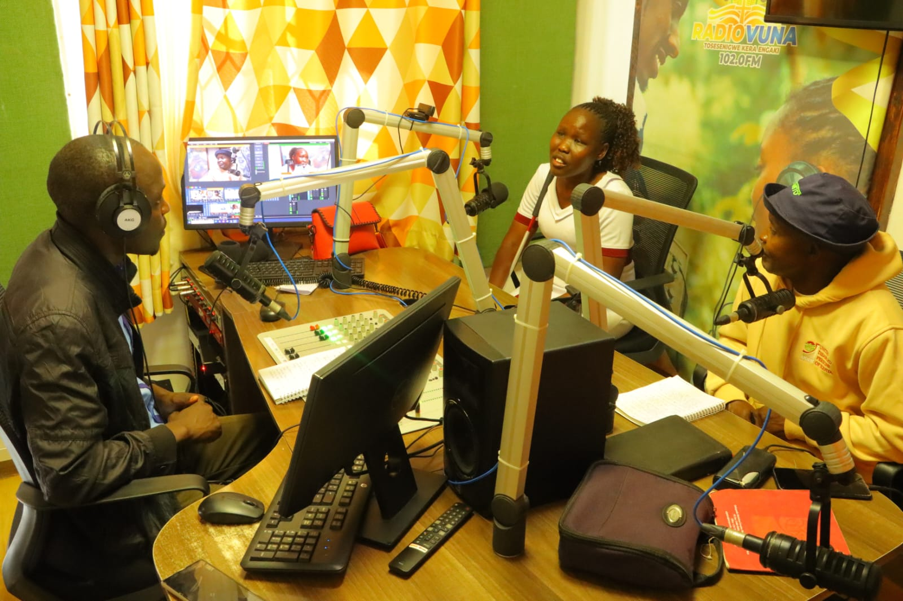
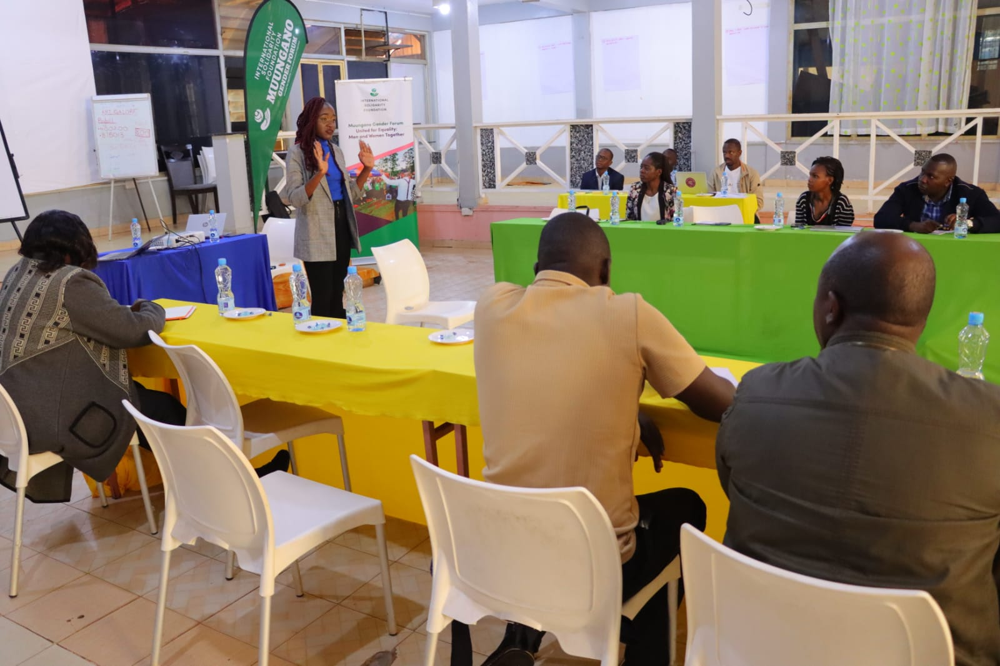
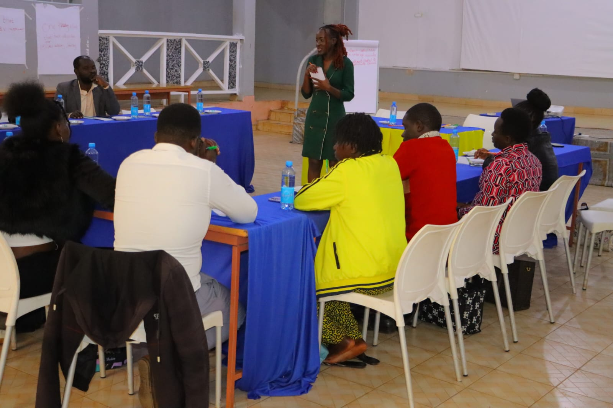
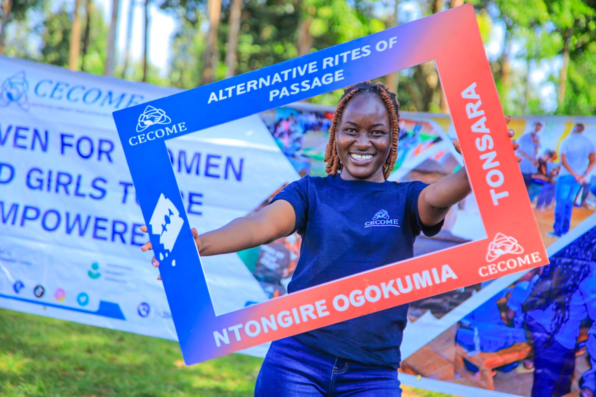
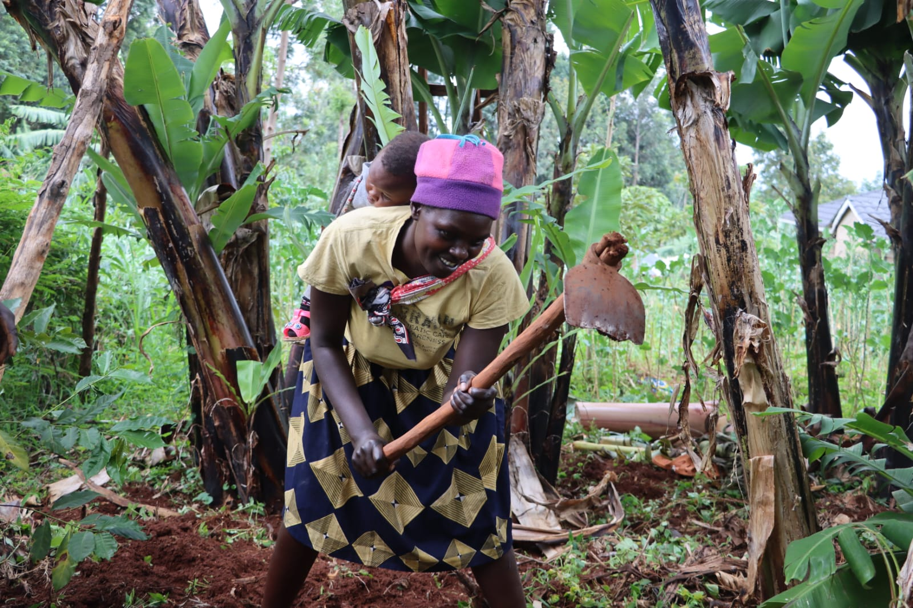
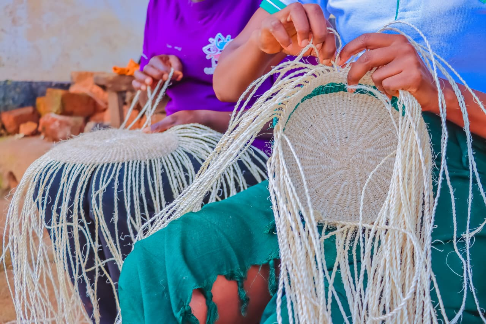

Video Documentary
International Red Nose Campaign Story
A documentary feature capturing life without FGM, using personal stories to inspire international support and advocacy.
A visual showcase of field activities, media features, and advocacy work spanning GBV prevention, gender justice, and community impact.
A documentary feature capturing life without FGM, using personal stories to inspire international support and advocacy.
A national TV interview sharing practical strategies for preventing gender-based violence across Western Kenya.
Nurturing strong media partnerships that expand coverage of advocacy work from local to national outlets.
Managing multi-platform campaigns across Facebook, Instagram, TikTok, X, and LinkedIn.

Designing culturally sensitive IEC materials that communicate the realities of FGM in ways communities can relate to and act on.

Amplifying women's voices during global advocacy moments, ensuring their experiences shape the conversation.

Preparing for and securing radio talk shows, equipping hosts with gender-sensitive approaches to advocacy messaging.

Designing and delivering workshops on male engagement and positive masculinity to help shift harmful norms.

Equipping media professionals with survivor-centered approaches to reporting on sensitive issues.

Leading survivor-informed campaigns that challenge harmful norms and drive community-level change.

Documenting the success stories of women-led enterprises, showcasing resilience and economic progress.

Spotlighting the craftsmanship and livelihood potential of women's handicraft work to boost visibility and market access.